Erik Goeke.
From Earth orbit
to deep space.
Aerospace engineer building machine learning systems and space robotics — fine-tuning NASA's geospatial foundation models, flying ferrofluid robots in zero gravity, and architecting planetary defense.
M.S. Aerospace Engineering at Georgia Tech (Dec 2026), B.S. with Honor (2025). I lead research teams, take hardware from CAD to flight test, and represent NASA-funded student research at the national level — from NASA Headquarters to Capitol Hill.
Teaching AI to read the Earth
At NASA Marshall Space Flight Center, I fine-tuned the Prithvi geospatial foundation model across three Earth-observation domains — flood detection, burn scar mapping, and crop segmentation — building end-to-end pipelines from dataset curation and augmentation through training, hyperparameter optimization, and evaluation on real multispectral satellite imagery.
Satellites photograph every corner of the planet every few days. Foundation models like Prithvi learn from that archive so a little extra training lets them map a flood or trace a wildfire's scar anywhere on Earth. My job was that extra training — and then asking a harder question: does it have to be this big?
I designed, implemented, and trained a U-Net entirely from scratch that outperformed the previously published benchmark and matched the far larger Prithvi foundation model across multiple geospatial segmentation tasks — evidence that a purpose-built lightweight architecture can rival a large-scale foundation model on domain-specific remote sensing.
I also advised a NASA AI-agents team on architecture selection, task design, and applied-ML practice — training strategies, evaluation frameworks, and system integration.
STICKR — a robot that sticks to anything in zero-g
The Surface Tension Induced Climbing Kinematic Robot uses ferrofluid — a magnetic liquid — as its adhesion mechanism, letting a small tracked robot drive on any surface in microgravity with no thrusters, no gravity, and no requirement that the surface be magnetic.
In orbit, wheels and legs are nearly useless: nothing pushes you into the floor. Thruster-based robots like Astrobee work, but cost power and complexity. STICKR holds itself down with the surface tension of a fluid pinned to its treads by magnets — and we proved it aboard a parabolic zero-gravity flight, presenting the results to Honeywell aerospace engineers.
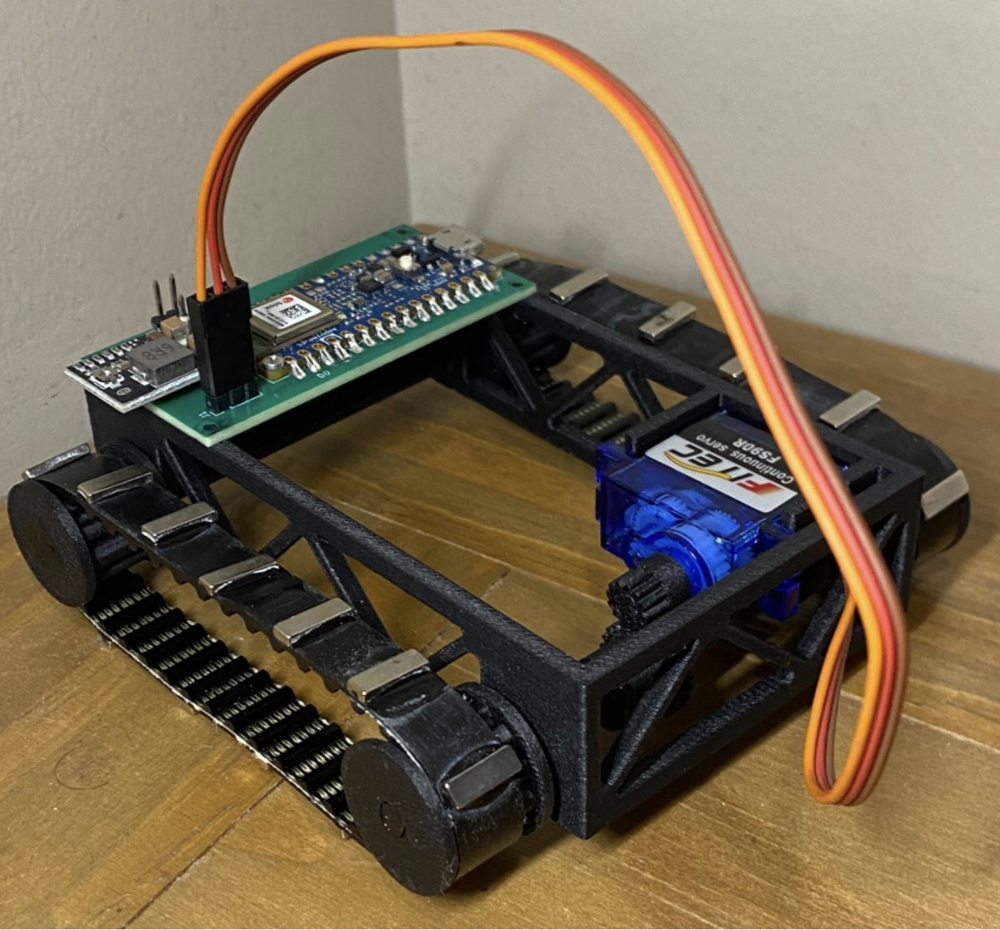
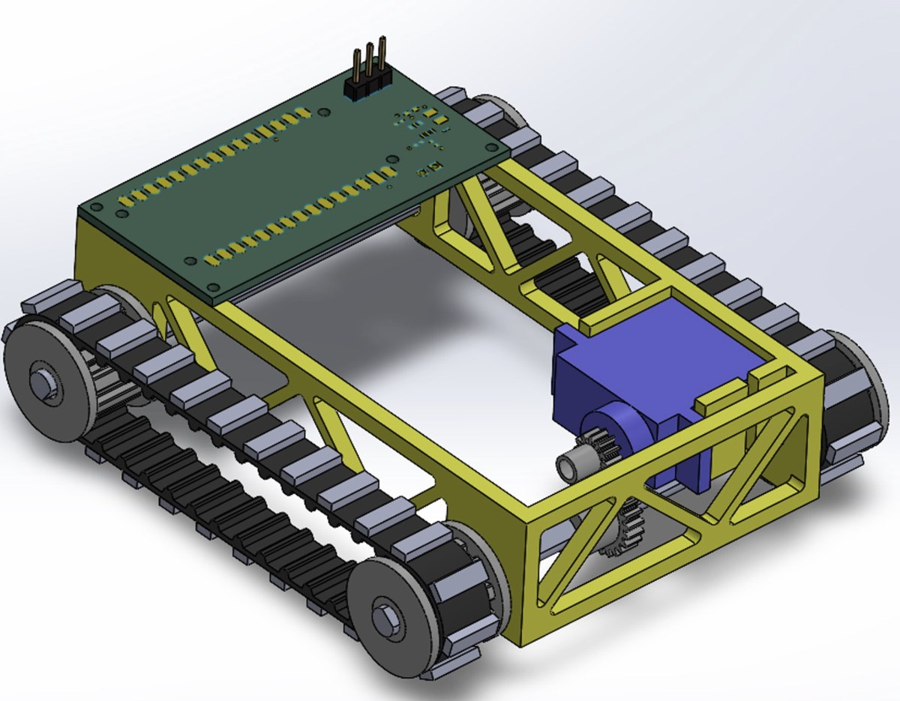
NOTLO — air traffic control for the Moon
A NOTAM-inspired deconfliction framework for high-cadence lunar surface operations: standardized, machine-readable notices — DUSTLO for regolith plumes, RADLO for radiation hazards, EXPLO for protected experiments — so lunar operators can coordinate without stepping on each other.
Aviation's NOTAM system keeps pilots informed but is famously unreadable. NOTLO redesigns the idea for the Moon: plain-language notices with consistent structure, a queryable central database, and priority filtering so operators only see what affects them. Shared with the Open Lunar Foundation for consideration in ongoing lunar-governance efforts.
ACTION: All EVA and rover activity ceases within 5 km radius.
RESUME: T+30 min after liftoff. Pressurized suits; cover solar panels.
Rapid planetary defense, as a system of systems
As Integration Engineer on Georgia Tech's Grand Challenge team, I coordinated threat detection, orbital analysis, and asteroid deflection architecture across kinetic-impactor and ablation-based mitigation strategies — a rapid-response system of systems for near-Earth object threats.
DART proved we can nudge an asteroid — given years of warning. The harder problem is the one we find late. I ran simulations modeling asteroid threat scenarios and contributed to mission-architecture trade studies and deflection feasibility analysis: how fast can detection, launch, and mitigation chain together when the clock is short?
Machines that survive the field
Two ground campaigns: a Mars-inspired rover holding constant speed over changing terrain with a hand-tuned PID controller, and a structural test campaign crushing 3D-printed spar designs to failure to find the strongest cross-section.
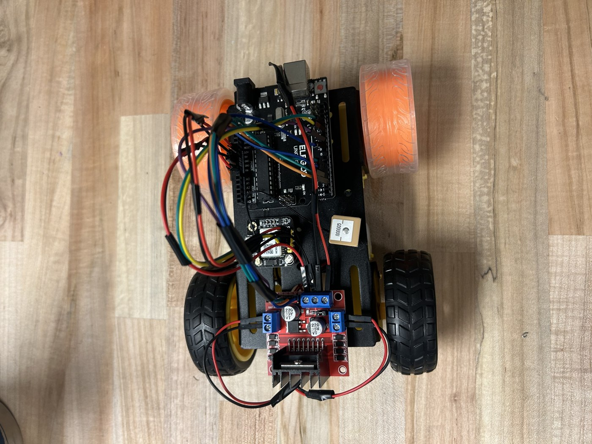
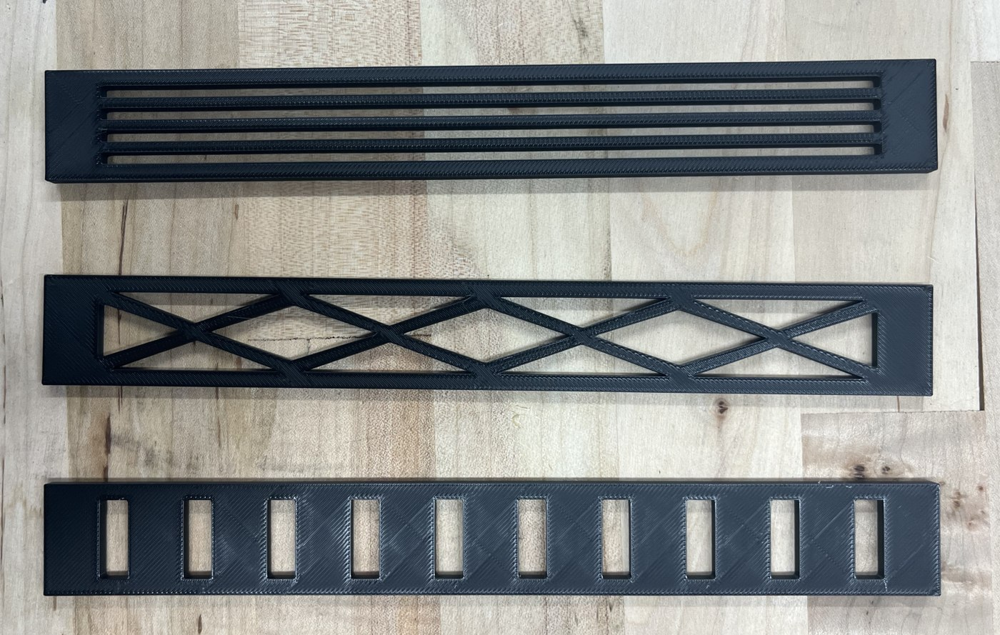
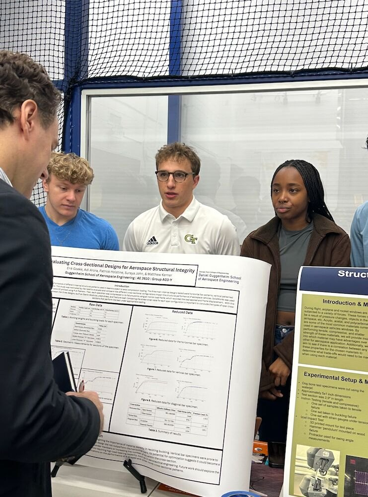
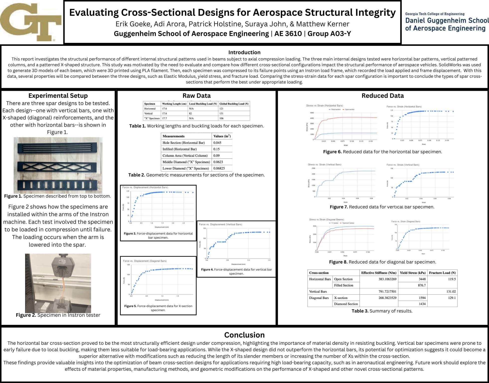
Bringing it back to Earth
As Research Team Lead of a 10-student, NASA-sponsored team, I build embedded machine learning systems on NVIDIA Jetson Orin and Nano robots and travel nationwide putting them in students' hands — sensor wiring, software bring-up, and on-device inference, taught hands-on.
ML-Bots introduces younger students to machine learning through robotics: a four-module curriculum from first Python commands to training neural networks that drive a robot. I serve as primary contact with research and industry partners, and I've presented the program's impact to NASA in Washington, D.C. and to congressional staffers on Capitol Hill.
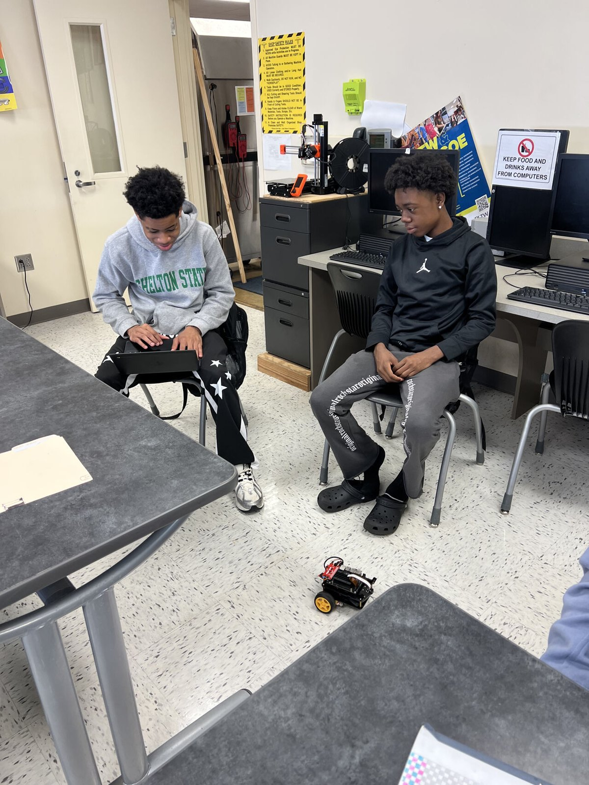
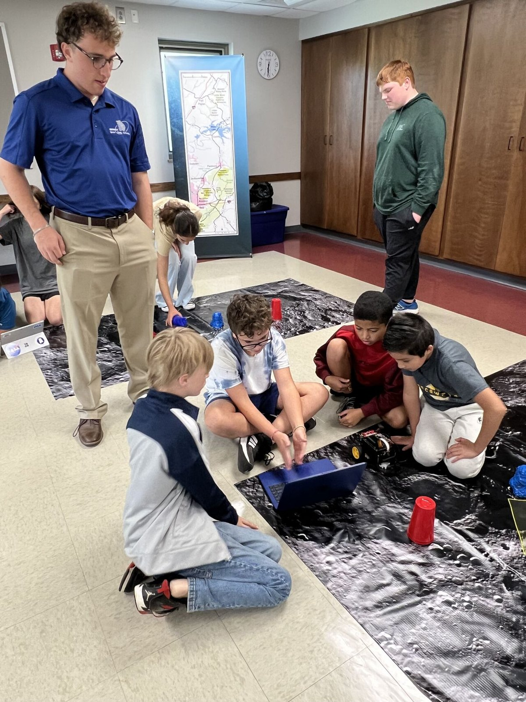
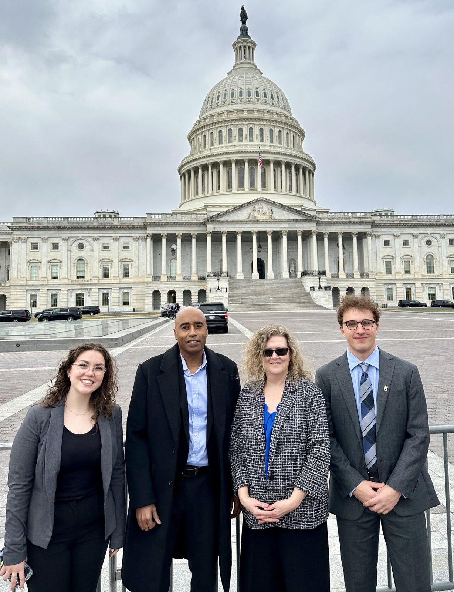
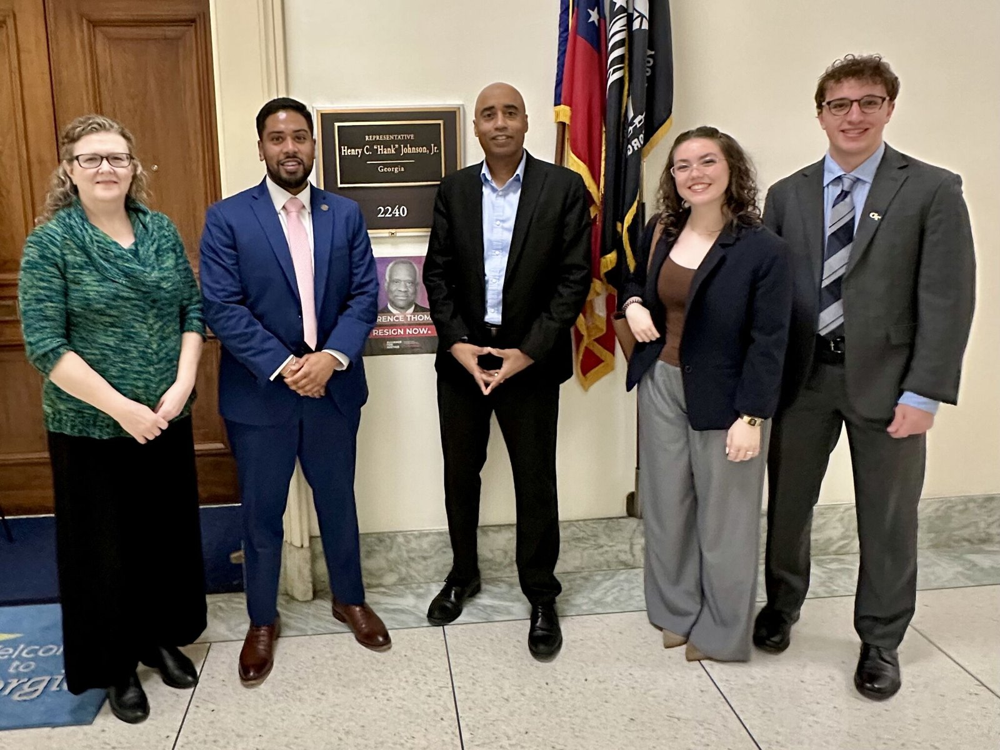
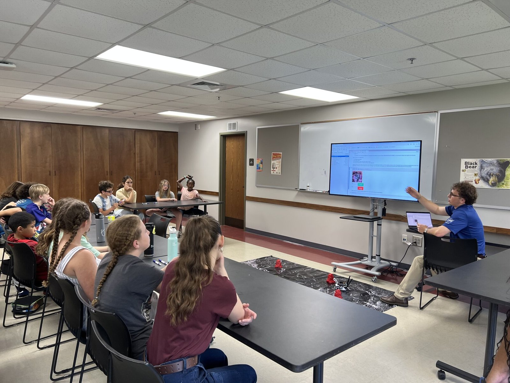
Experience
AI & Machine Learning Software Engineer · NASA Marshall Space Flight Center
Fine-tuned the Prithvi geospatial foundation model across flood, burn scar, and crop domains; built a from-scratch U-Net that beat the published benchmark; advised a NASA AI-agents team.
Research Assistant (Undergrad → Graduate) · Georgia Tech, NASA ML-Bots
Research Team Lead for a 10-student NASA-sponsored team; embedded ML on Jetson hardware; nationwide technical support for distributed research teams.
Intern & Program Lead · Georgia Space Grant Consortium
Led an engineering immersion program in Albany, GA; Engineering Team Lead for marine vehicle and multirotor UAV development; led and trained 15 interns.
Teaching Assistant · Intro to AE Vehicle Performance · Georgia Tech
Designed a hands-on flight-simulation lab project using X-Plane Pro and Simulink.
Teaching Assistant · Dynamics · Georgia Tech
Developed problems and led recitation sessions, working solutions by hand and in MATLAB.
National Student Representative · GSGC National Meeting, Washington D.C.
Presented team accomplishments to NASA and met with congressional staffers on Capitol Hill.
Publications
Awards & other missions
FellowshipGSGC Outstanding Achievement Fellowship
For academic excellence and contribution to aerospace research.
1st PlaceBest Research Project & Presentation
Georgia Space Grant Consortium Affiliated Meeting.
ScholarshipZell Miller & HOPE Scholarship
Merit-based academic scholarships.
RecognitionHoneywell industry feedback — STICKR
Presented zero-g flight results to Honeywell aerospace engineers; recognized for the novel application of ferrofluid adhesion.
PropulsionAirbus A380 JATO system design
Full propulsion design with characteristic velocity, specific-heat-ratio, and pressure-coefficient analysis.
AdvisoryTechnical Advisor, DARPA Lift Challenge
Guided VTOL aerodynamic analysis, payload-to-weight optimization, and performance trade studies.
Let's build the next mission
Open to aerospace and ML opportunities.